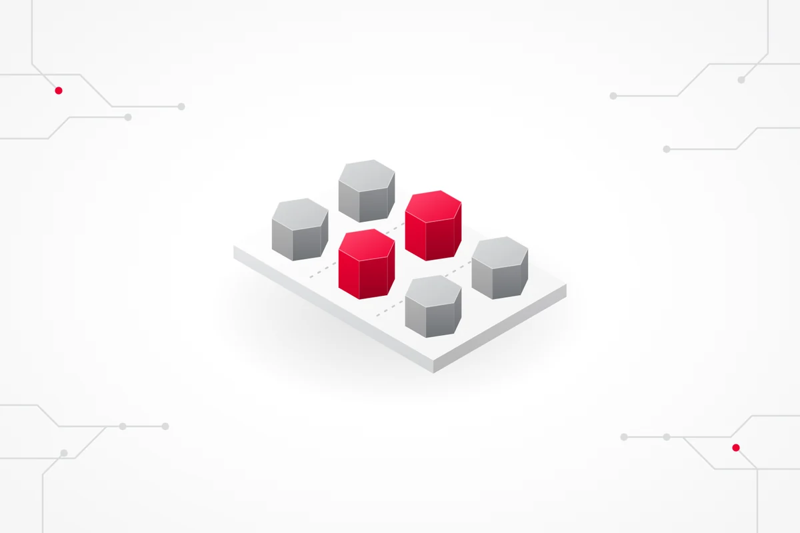
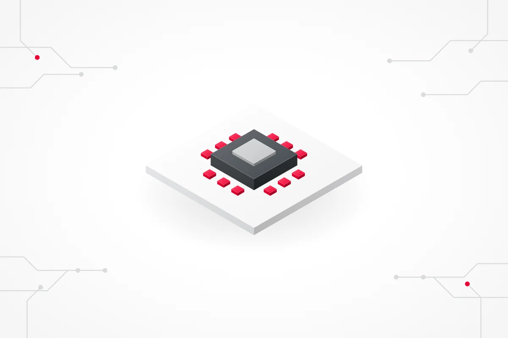
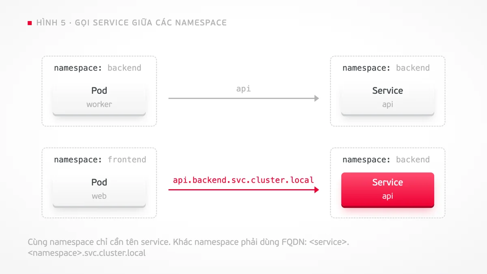
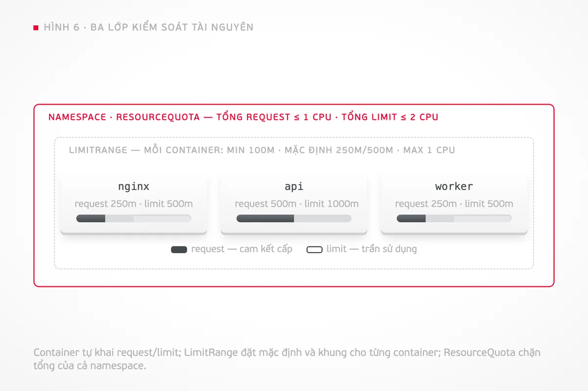
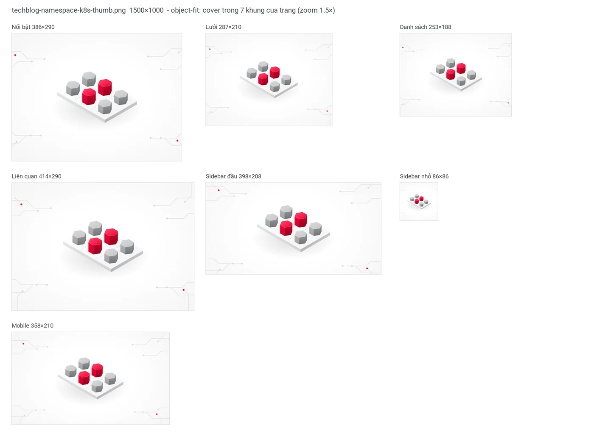
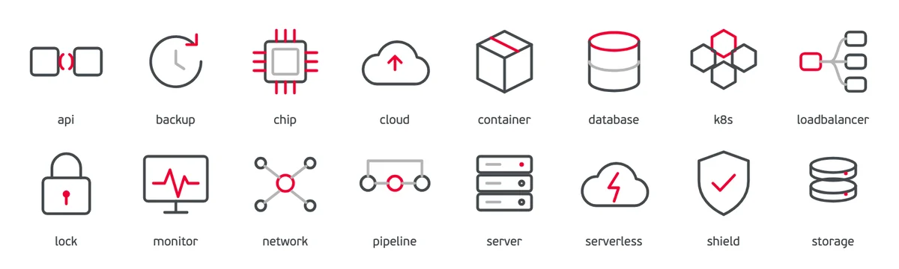

Đưa tiêu đề hoặc link bài viết, Claude tự dựng thumbnail isometric và bộ sơ đồ trong bài theo đúng kích thước trang viettelcloud.vn/tech-blog, đúng 5 màu thương hiệu, rồi tự kiểm tra trước khi giao.

Thumbnail 1500×1000 · bài "Namespace trong Kubernetes"Không phải prompt ảnh AI rồi sửa tay. Mọi hình được dựng bằng HTML/SVG theo template, render bằng Chrome, nên đúng màu tuyệt đối và sửa lại được từng chữ.
Khối 3D đẳng cự, gradient chỉ trong tint đỏ/xám Viettel, bóng mềm, nền mạch điện mờ. Thư viện iso.py có sẵn hộp, trụ, lục giác, sàn.
Template node, mũi tên, nhóm, so sánh, thanh tài nguyên. Node dạng khối nổi nhẹ cùng tông với thumbnail; chữ đủ lớn để đọc trên mobile.
Mô phỏng thumbnail trong đúng 7 khung hiển thị của trang, đo % màu ngoài bảng, % đỏ, dung lượng, vùng an toàn.
Kích thước lấy từ 56 bài và 7 khung render thật của viettelcloud.vn, không đoán. Có hướng dẫn đo lại khi giao diện đổi.
Bộ ảnh cho bài "Namespace trong Kubernetes" trên Tech Blog: thumbnail và các sơ đồ khái niệm, tất cả sinh từ skill.




preview_crops.py: thumbnail trong 7 khung thật của trang, kể cả ô 86×86
Tên thư mục phải giữ nguyên là viettel-techblog-images vì các lệnh trong skill tham chiếu tới đường dẫn này.
# Cách A — clone repo rồi copy
git clone https://github.com/minhnhat0202-bit/techblog-images.git
cp -R techblog-images/skill/viettel-techblog-images ~/.claude/skills/
# Cách B — tải file .zip ở nút phía trên, giải nén rồi copy
unzip viettel-techblog-images.zip -d ~/.claude/skills/
# Cách C — một dòng
curl -fsSL https://raw.githubusercontent.com/minhnhat0202-bit/techblog-images/main/install.sh | bashScript báo Chrome, Pillow và font có sẵn hay chưa. Thiếu Pillow thì pip3 install pillow. Font FS PF BeauSans Pro là font nội bộ Viettel, không kèm trong skill; thiếu font, ảnh tự dùng Roboto.
python3 ~/.claude/skills/viettel-techblog-images/scripts/render.py --check-envSkill tự kích hoạt khi bạn nhắc tới ảnh cho bài Tech Blog. Ảnh được lưu vào ./techblog-images/<tên-bài>/ ngay trong thư mục bạn đang mở.
Làm thumbnail cho bài "Object Storage là gì" trên Tech Blog Viettel Cloudhttps://viettelcloud.vn/tech-blog/3/140
tạo bộ ảnh minh họa phù hợp cho bài nàyClaude đọc bài qua API công khai, chọn ẩn dụ cho từng phần, dựng thumbnail và các sơ đồ, kiểm tra rồi mở Finder tại thư mục kết quả kèm file ghi chú vị trí chèn ảnh.
Thumbnail cho bài về Load Balancer,
kiểu isometric, nền lưới chấmCó thể chỉ định phong cách (isometric hoặc line-art), nền (mạch điện, chấm, lưới, tổ ong, trơn), và từ khóa ngắn đặt cạnh icon.
Kiểm tra xem thumb.png có hợp
với khung hiển thị của Tech Blog khôngSkill mô phỏng 7 khung crop, báo khung nào mất chủ thể, màu nào ngoài bảng, và đề xuất pad/crop về 3:2 hoặc vẽ lại.
Hình 3 đổi nhãn "team-a" thành "frontend",
node ClusterRole tô đỏ thay cho khungMọi hình có file HTML nguồn cạnh PNG. Claude sửa HTML và render lại, không chỉnh tay trên ảnh, nên lần sau tái tạo được.
techblog-images/namespace-kubernetes/
├── techblog-namespace-k8s-thumb.webp ← ảnh đại diện (upload lên CMS)
├── techblog-namespace-k8s-thumb.png
├── techblog-namespace-k8s-fig01.png … ← ảnh trong bài
├── thumb.html, fig01.html … ← nguồn, sửa rồi render lại
├── preview-thumb-7-khung.png ← xem thumbnail bị crop ra sao
└── GHI-CHU-CHEN-ANH.md ← hình nào chèn đoạn nào, alt text| Loại ảnh | Kích thước xuất | Lý do | Định dạng giao |
|---|---|---|---|
| Thumbnail | 1500 × 1000 (3:2) | Trang crop object-fit: cover trong 7 khung tỷ lệ 1:1 → 1.91:1 (386×290, 287×210, 253×188, 414×290, 398×208, 86×86, mobile 358×210). Vùng an toàn 1000×760 ở giữa. | WebP q85 (<250 KB) + PNG |
| Ảnh trong bài | rộng 1688; cao 950 / 1126 / 844 / 1266 | Cột nội dung 844 px desktop, ảnh hiển thị full cột; 1688 = 2× cho Retina. Mobile co còn 358 px nên chữ ≥ 36 px. | PNG (<500 KB) hoặc WebP |
| Chia sẻ mạng xã hội | 1200 × 630 | Chuẩn Open Graph, khi được yêu cầu. | PNG/JPG |
Chỉ 5 màu chính thức của Viettel và tint/shade của chúng. Không xanh dương, tím, cam, vàng, kể cả logo công nghệ bên thứ ba. Mỗi hình đúng một điểm nhấn đỏ.
check_image.py đo % điểm ảnh ngoài bảng màu: trên 0,5% là không đạt. Đây là cách phát hiện logo màu hoặc ảnh AI bị lệch hue mà mắt dễ bỏ qua.Skill dùng Chrome headless để render. Cài Google Chrome, Chromium hoặc Microsoft Edge; nếu ở đường dẫn lạ, đặt biến môi trường CHROME_BIN trỏ tới file thực thi.
Không bắt buộc. Đây là font nội bộ Viettel nên không kèm trong skill. Thiếu font, ảnh tự dùng Roboto (font của website Viettel Cloud) nên vẫn cùng tông với trang.
Nói "thumbnail line-art" hoặc "tối giản tuyệt đối". Template phẳng với 16 icon và 5 nền vẫn có sẵn; ảnh trong bài có thể bỏ hiệu ứng khối nổi bằng cách bỏ class raised.
Được, nhưng kích thước và màu đang khóa theo trang Tech Blog Viettel Cloud. Đổi trang khác thì sửa bảng kích thước trong references/site-specs.md và bảng màu trong references/style-guide.md; file có sẵn hướng dẫn đo lại.
Có, skill kèm prompt mẫu và bước hậu kỳ bắt buộc: đưa về 1500×1000, kiểm tra màu. Nhưng ưu tiên vẫn là HTML/SVG vì đúng màu tuyệt đối và sửa được từng chi tiết.
File dist/viettel-techblog-images.skill nhập được vào claude.ai, nhưng phần render cần Chrome và Python chạy trên máy nên chỉ hoạt động đầy đủ trong Claude Code.